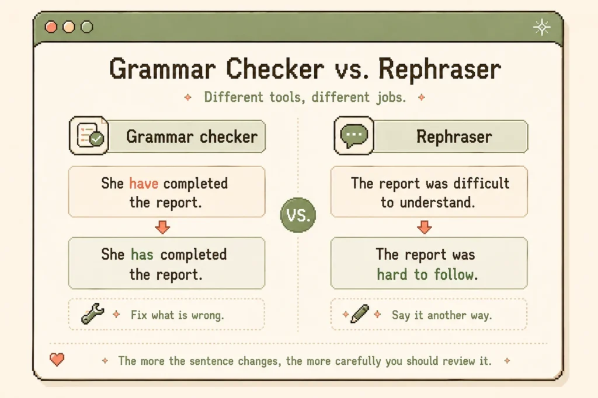
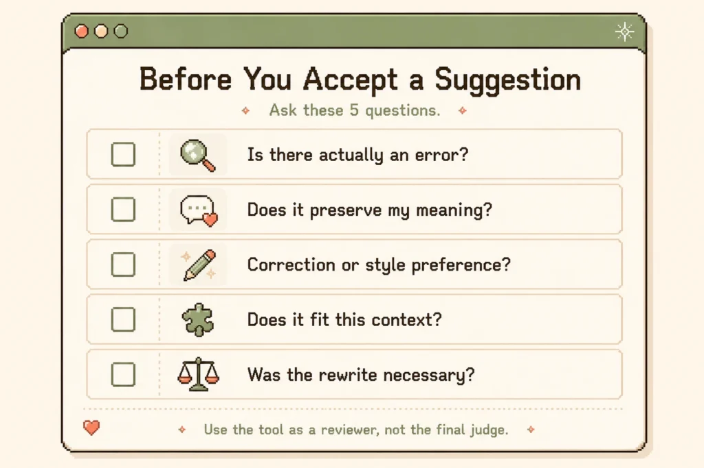
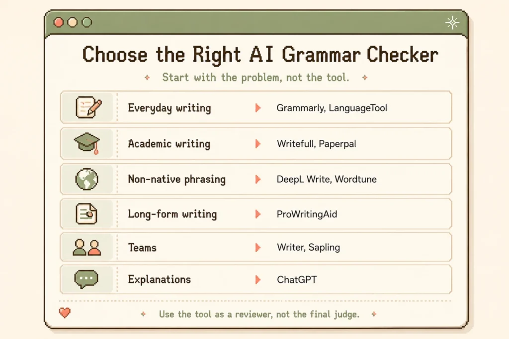

I used to think a grammar checker had one job: find the mistakes I missed. But once I started using more of them, I noticed a bigger problem. Some tools corrected real errors, while others kept rewriting sentences that were already fine.
That made it harder to tell what I should actually accept, especially in essays and academic writing where a “better” sentence can quietly change the meaning. So instead of looking for the tool with the longest feature list, I started comparing them by a simpler question: what kind of writing does each one actually help with?
This guide compares 21 AI grammar checkers for everyday English, academic writing, multilingual use, rewriting, and work, including free and paid options.
Key Takeaways
- The best AI grammar checker in 2026 depends on your use case: general writing, academic papers, multilingual needs, and team workflows each call for a different tool.
- Grammarly is the strongest all-around starting point for most English writers and learners, but not every suggestion is a correction. Clarity, tone, and rewriting suggestions should be treated as optional editorial advice.
- For academic writing, specialized tools such as Writefull, Paperpal, and Trinka may be a better fit because they are built around research and thesis workflows.
Quick Comparison
| 🔧 Tool | 🎯 Best For | 💰 Free Option | ✨ Main Strength |
|---|---|---|---|
| 🌟 Grammarly | Most writers | Yes | Grammar + clarity + tone |
| 🌟 QuillBot | Grammar + paraphrasing | Yes | Free correction and rewriting |
| 🌟 LanguageTool | Multilingual writers | Yes | Broad language support |
| ProWritingAid | Long-form writing | Yes | Detailed writing reports |
| 🌟 DeepL Write | Non-native English | Yes | Fluency and natural phrasing |
| Ginger | Simple daily checking | Yes | Grammar + rephrasing |
| 🌟 Writefull | Research papers | Yes | Academic writing + Overleaf |
| Paperpal | Academic manuscripts | Yes | Research-specific editing |
| Trinka | Technical writing | Yes | Academic and technical English |
| Wordvice AI | Academic editing | Yes | AI + human editing workflow |
| Scribbr | Students | Yes | Free no-sign-up grammar checking |
| ProofreaderPro.ai | Reviewing academic edits | Yes | Visible corrections and tracked edits |
| Hemingway Editor | Readability | Yes | Clarity + grammar checking |
| Wordtune | Sentence rewriting | Yes | Alternative phrasing |
| editGPT | Reviewing AI edits | Yes | Visible editing workflow |
| Rephrasely | Rephrasing | Yes | Broad rewriting toolkit |
| WRITER | Enterprise teams | Varies | Brand and style governance |
| Sapling | Customer-facing teams | Yes | Short-form workplace writing |
| WhiteSmoke | Traditional grammar suite | Yes | Grammar + style + translation |
| 🌟 ChatGPT | Grammar explanations | Yes | Custom instructions |
| Gemini | Google users | Yes | Google Workspace workflow |
🌟 marks my editor’s picks for common use cases, not test scores.
Best AI Grammar Checkers for Most Writers
1. Grammarly — Best Overall
What it does: Grammarly checks grammar, spelling, punctuation, word choice, clarity, and tone across everyday writing workflows. It works across browsers, Google Docs, Microsoft Word, and mobile, and now also provides multilingual writing suggestions in more than 20 languages, though the level of support varies by language.
Why it stands out: Grammarly separates correctness feedback from broader suggestions about clarity, tone, and rewriting. Correctness issues deserve close attention, while style and rewriting suggestions are better treated as editorial options. That distinction matters because a suggested change can be useful without being grammatically required.
Best for: Writers who use English regularly and want one general-purpose writing assistant that works across all their apps.
Watch out for: Do not assume every rewrite is a correction. A sentence can be grammatically correct even when Grammarly offers a clearer or shorter alternative.
Pricing: Grammarly has a free plan. Grammarly Pro is currently $12 per month when billed annually.
2. QuillBot — Best for Paraphrasing and Grammar
What it does: QuillBot combines grammar checking with paraphrasing, summarizing, citation tools, AI writing, and other rewriting features. Its grammar checker is available free with no word limit and no account required, while the broader product is especially centered on paraphrasing.
Why it stands out: Grammar correction and rewriting sit next to each other in one interface. That is convenient for students and writers who frequently move between fixing a sentence and rephrasing it entirely. The free plan is among the most generous available.
Best for: Students and general writers who want grammar checking and paraphrasing in the same tool.
Watch out for: A paraphrase can change much more than a grammar correction. If only one verb form or preposition is wrong, rewriting the whole sentence may be unnecessary. QuillBot updated its privacy policy in late 2025 so that free users cannot opt out of having their text used for AI model training. Paid users can opt out.
Pricing: The basic grammar checker is free. Premium plans unlock more rewriting and AI features.
3. LanguageTool — Best for Multiple Languages
What it does: LanguageTool checks spelling, grammar, punctuation, and style across more than 30 languages and multiple English varieties including US, UK, Canadian, Australian, New Zealand, and South African English. Its free version handles basic corrections, while Premium adds deeper grammar and style checking.
Why it stands out: LanguageTool makes more sense than an English-first tool when your writing regularly moves between languages. It also explicitly does not use submitted text to train its AI models, which matters for writers handling sensitive content.
Best for: Multilingual writers, international students, translators, and people who regularly switch between languages.
Watch out for: Supporting many languages does not mean accuracy is identical across every language. The free browser extension now requires a paid plan as of early 2026.
Pricing: Free and Premium versions are available. Premium starts from around $4.99 per month billed annually.
4. ProWritingAid — Best for Long-Form Writing
What it does: ProWritingAid combines grammar checking with more than 20 specialized reports that examine patterns across longer writing, including style, repetition, readability, sentence structure, pacing, and dialogue. The free plan lets users edit up to 500 words at a time. It also integrates natively with Scrivener.
Why it stands out: It is more diagnostic than a typical sentence-by-sentence grammar checker. That makes it useful when the problem is not one incorrect sentence but a pattern appearing repeatedly across a chapter or manuscript. ProWritingAid does not train its AI on user text.
Best for: Novelists, long-form bloggers, essayists, editors, and writers working with large drafts.
Watch out for: Real-time checking can feel slow on documents over 5,000 words. If you only want to correct a short email or paragraph, the extra reports may be more than you need.
Pricing: A free plan is available. Premium starts from around $10 per month billed annually, with a lifetime license option at $399.
5. DeepL Write — Best for Non-Native English
What it does: DeepL Write checks grammar, spelling, punctuation, fluency, word choice, tone, and sentence structure. It also offers writing styles including Academic, Business, Simple, and Casual. Free users can currently work with up to 2,000 characters at a time.
Why it stands out: DeepL Write is particularly useful when a sentence is understandable but still feels translated or slightly unnatural. It focuses on phrasing and fluency rather than mechanical rules, which is the specific gap that English learners from Japanese, Korean, or Chinese-speaking backgrounds often experience.
Best for: Non-native English speakers, multilingual professionals, students, and writers who care about natural phrasing over formal rule correction.
Watch out for: DeepL Translator and DeepL Write solve different problems. Translation changes the language; Write improves text that already exists in English.
Pricing: DeepL Write has a free version. Write Pro removes the character limit and adds additional features.
6. Ginger — Best Simple Grammar Checker
What it does: Ginger combines grammar, spelling, punctuation, style, sentence rephrasing, and translation. Its free version provides access to core functions with limits, while Premium expands corrections and rephrasing.
Why it stands out: Ginger keeps the workflow relatively simple. It is useful if you want grammar correction and alternative phrasing without a large set of academic or manuscript reports.
Best for: Casual writers and English learners who prefer a straightforward grammar-and-rephrase workflow.
Watch out for: Ginger runs changing promotions, so prices quoted in older reviews can become outdated quickly.
Pricing: Free and Premium versions are available. Current Premium pricing is best checked directly before purchasing.
Best AI Grammar Checkers for Academic Writing
7. Writefull — Best for Research Papers
What it does: Writefull is designed specifically for academic writing. Its tools provide language feedback and writing assistance in Microsoft Word and Overleaf, including direct support for LaTeX writing. Its models are trained on published journal articles rather than general web text.
Why it stands out: Overleaf integration is the clearest differentiator. Researchers can receive language feedback inside the environment where the paper is already being written, instead of moving text into a separate editor. Writefull does not train on user text.
Best for: Researchers, PhD students, journal authors, and anyone writing papers or theses in Word or LaTeX.
Watch out for: Writefull’s specialization is also its limitation. It makes much less sense for everyday emails, marketing copy, or casual writing.
Pricing: Free access is available, with Premium and institutional options for expanded features. Premium is approximately $150 per year.
8. Paperpal — Best for Academic Manuscripts
What it does: Paperpal provides a free academic grammar checker and a broader research-writing platform with language editing, citation support, manuscript checks, and writing assistance across web, Word, Google Docs, and Overleaf workflows.
Why it stands out: Paperpal is built around the wider research-paper process rather than stopping at sentence-level grammar. That makes it useful when a manuscript needs academic language support alongside citation and submission-related checks.
Best for: Researchers, postgraduate students, and academic authors preparing manuscripts for journal submission.
Watch out for: If all you need is a quick grammar check for ordinary English, much of the wider research workflow may be more than you need.
Pricing: A free option is available, with paid plans for expanded research and writing features.
9. Trinka — Best for Technical and Scientific Writing
What it does: Trinka is a grammar and language-enhancement assistant designed for academic and technical writing. Its paid plans add advanced writing modes, academic style guides, file proofreading, and other research-focused tools.
Why it stands out: Its product is built around formal and technical language rather than adapting a general consumer writing tool to research use. It understands complex subject-verb agreements in dense statistical language without requiring manual dictionary overrides.
Best for: Researchers, technical writers, graduate students, and people working with formal scientific documents.
Watch out for: Formal academic editing can feel excessive if your actual task is a casual email, blog post, or conversational piece.
Pricing: Trinka has a free Basic plan. Its current individual Premium plan is listed at $80 per year.
10. Wordvice AI — Best for Academic Editing With a Human-Editing Option
What it does: Wordvice AI combines grammar checking, proofreading, paraphrasing, and other editing tools. The grammar checker is available free after registration, while the wider Wordvice business also offers professional human editing services.
Why it stands out: The AI tool and human editing service sit in the same ecosystem. That can be useful for academic writers who want automated feedback during drafting but may want a professional editor for a final high-stakes submission.
Best for: Students and academic writers who want both AI editing and access to human proofreading.
Watch out for: AI subscriptions and human editing are separate services, so compare them as different stages of the workflow rather than one package.
Pricing: A free Basic plan is available. Wordvice currently lists Premium from $9.95 per month when billed annually.
11. Scribbr — Best Free Option for Students
What it does: Scribbr’s online grammar checker is free, requires no registration, and currently has no stated character or word limit. It checks grammar, spelling, punctuation, and common word-choice problems.
Why it stands out: The lack of sign-up and usage friction is the appeal. Students can paste a draft directly into the checker without creating another account or choosing a subscription.
Best for: Students, essay writers, and occasional users who want a straightforward free checker with no strings attached.
Watch out for: Scribbr also sells separate proofreading and academic services, so distinguish the free grammar checker from its other paid products.
Pricing: The online grammar checker is free.
12. ProofreaderPro.ai — Best for Reviewing Academic Changes
What it does: ProofreaderPro.ai provides academic-focused grammar and proofreading tools that show the original text, proposed correction, and explanation. Paid plans add document handling, tracked changes in Microsoft Word format, citations, and broader academic editing features.
Why it stands out: The visible edit trail makes it easier to review what changed instead of receiving a completely rewritten paragraph. That workflow is useful for academic writers who want AI assistance while keeping control over individual edits.
Best for: Researchers and students who want transparent academic editing rather than invisible rewriting.
Watch out for: The free checker is intended for short passages, so longer documents require a paid workflow.
Pricing: A free checker is available. The Academic plan is currently listed at $14 per month or $169 per year.
Best for Style, Clarity, and Rewriting
13. Hemingway Editor — Best for Readability
What it does: Hemingway is best known for readability, but it now also offers AI grammar, spelling, and punctuation checking. Hemingway Editor Plus adds AI-powered corrections, rewrites, tone adjustments, and other editing features.
Why it stands out: Hemingway keeps readability at the center. It is particularly effective at making complicated, wordy writing visually obvious so you can simplify it deliberately rather than by accident.
Best for: Bloggers, marketers, business writers, and anyone who wants clearer, more direct prose. Works well as a second pass after grammar checking.
Watch out for: Readability scores are guidance, not universal writing rules. Academic, legal, technical, and literary writing sometimes requires sentence complexity.
Pricing: Free online grammar and readability tools are available. Editor Plus offers a two-week trial and paid plans.
14. Wordtune — Best for Sentence Rewriting
What it does: Wordtune combines grammar and spelling correction with multiple ways to rewrite a sentence. Its free Basic plan includes limited daily rewrites while keeping grammar and spelling corrections available.
Why it stands out: Wordtune is useful when the sentence is not necessarily wrong but you want to explore clearer or more natural ways to express the same thought. It offers real choices rather than a single suggested rewrite.
Best for: Writers who know what they want to say but want help with how to phrase it.
Watch out for: Once you move from correction to rewriting, check whether the new version still preserves the emphasis and meaning of the original.
Pricing: A free Basic plan is available, with paid Advanced and Unlimited plans.
15. editGPT — Best for Seeing What AI Changed
What it does: editGPT is built around proofreading and editing with visible changes. It can catch grammar issues and awkward phrasing while making it easier to inspect what the AI modified instead of simply replacing your draft.
Why it stands out: The edit-review workflow is the main reason to use it. Writers can compare original and revised text rather than trusting a cleaned-up final version without knowing what changed.
Best for: Editors, content creators, students, and writers who want transparent AI editing they can review line by line.
Watch out for: It is broader than a traditional grammar checker. If you only need a few mechanical corrections, a simpler tool may be faster.
Pricing: A free option is available. The current site lists Pro from $8 per month when billed annually.
16. Rephrasely — Best for Rephrasing
What it does: Rephrasely combines paraphrasing with other writing utilities and supports a free tier alongside paid or credit-based usage.
Why it stands out: It is more useful as a rewriting workspace than as a pure grammar checker. That makes it relevant for writers who regularly need multiple ways to reword text rather than a single corrected version.
Best for: Content creators, marketers, and students who frequently paraphrase or restructure existing text.
Watch out for: Do not confuse a successful paraphrase with a necessary grammar correction. Rewriting more of a sentence creates more opportunities to alter tone or meaning unintentionally.
Pricing: Free access is available, with paid options and prepaid credits.
Best for Work and Teams
17. WRITER — Best for Brand Style Governance
What it does: WRITER is an enterprise AI platform rather than a conventional consumer grammar checker. Its brand system lets teams manage voice profiles, approved terminology, restricted terms, and style guides covering grammar, punctuation, capitalization, and readability.
Why it stands out: It solves a different problem from Grammarly or QuillBot: keeping many people and AI workflows aligned with the same brand standards at scale.
Best for: Enterprise marketing, communications, legal, and content teams that need shared language rules across a large organization.
Watch out for: If you are an individual student or solo writer looking for a simple grammar checker, WRITER is probably much more platform than you need.
Pricing: Pricing depends on the plan and organizational setup.
18. Sapling — Best for Customer-Facing Teams
What it does: Sapling offers a free online AI grammar checker alongside tools designed for customer-facing workflows. It checks grammar, spelling, punctuation, fluency, and conciseness, while its broader product integrates with workplace communication tools including CRM platforms.
Why it stands out: Sapling is oriented toward short, high-volume professional communication rather than book-length or academic writing. Its autocomplete suggestions are trained on professional customer support language.
Best for: Customer support, sales, recruiting, and success teams that write large numbers of short professional messages.
Watch out for: A support-focused workflow is not automatically the best fit for a thesis, novel, or long research document.
Pricing: The online grammar checker is free. Paid plans unlock additional workplace and integration features.
Other Grammar Checkers Worth Knowing
19. WhiteSmoke — Best Legacy Grammar Suite
What it does: WhiteSmoke combines grammar, spelling, punctuation, style checking, and translation. It also provides a free online checker alongside its paid products.
Why it stands out: WhiteSmoke represents the older all-in-one proofreading model: a dedicated grammar suite rather than a modern chat-based writing assistant, which some writers prefer for its simplicity.
Best for: Users who prefer a conventional proofreading product with translation and style tools included.
Watch out for: Parts of the product feel more traditional than newer AI-first writing platforms, so try the free checker before committing to a paid plan.
Pricing: Free online checking is available. Paid plans are also available.
20. ChatGPT — Best for Grammar Explanations
What it does: ChatGPT is a general AI assistant rather than a dedicated grammar checker, but it can review drafts, explain language problems, compare alternatives, and give targeted feedback when you specify what should and should not change.
Why it stands out: You can ask follow-up questions. If you do not understand why a correction was suggested, you can ask about the grammar rule, compare two versions, or request a minimal edit that preserves your wording. For English learners who want to understand their mistakes rather than just fix them, that conversational feedback layer is genuinely useful. For a detailed guide on how to use it specifically for grammar checking, see our article on how to use ChatGPT to check grammar.
Best for: English learners and writers who want explanations alongside corrections rather than silent edits.
Watch out for: Be specific with your instructions. A vague “improve this” prompt can lead to much more rewriting than a request to “correct grammar only and preserve my wording.”
Pricing: Free and paid ChatGPT plans are available.
21. Gemini — Best for Google Workspace Users
What it does: Gemini can help draft, refine, and edit writing, while Google Workspace integrations bring AI writing assistance into Docs and Gmail. Workspace features include writing and editing prompts as well as proofreading suggestions for conciseness, tone, and style.
Why it stands out: The Google Docs integration means you can get grammar and style feedback without leaving the document you are writing in. For writers already in the Google ecosystem, Gemini is the most frictionless AI writing assistant available.
Best for: Google Workspace users who want grammar and writing assistance alongside broader AI features.
Watch out for: Gemini is a general AI assistant, not a dedicated grammar-checking product. Ask for minimal correction when you do not want broader rewriting.
Pricing: Gemini has free access, while additional Workspace and Google AI features depend on the account and plan.
What Is the Best Free AI Grammar Checker?
If the goal is to paste text into a browser and fix grammar without paying, Scribbr and QuillBot are two of the easiest places to start. Scribbr currently requires no account and states that its grammar checker has no word or character limit, while QuillBot provides free basic grammar checking alongside its broader writing suite with no signup required.
LanguageTool, Grammarly, ProWritingAid, Ginger, Hemingway, Wordtune, editGPT, Sapling, and several other tools in this guide also provide some form of free access. The important question is not simply whether a pricing page says Free, but which corrections and limits apply to that free version.
For occasional grammar checks, a browser-based free tool may be enough. If you want real-time suggestions inside the apps where you write, advanced rewriting, academic workflows, or large-document support, the paid tier becomes more relevant.
Grammar Checker vs. Rephraser: Which One Do You Need?

A grammar checker and a rephraser solve related but different problems.
A grammar checker should primarily tell you whether something is wrong. If you write “She have completed the report,” the useful change is small: “She has completed the report.”
A rephraser answers a different question: could I say this another way? That becomes useful when the original sentence is already understandable but feels repetitive, awkward, too formal, or too casual. QuillBot, DeepL Write, Wordtune, Rephrasely, ChatGPT, and Gemini all move further into this territory.
Neither approach is automatically better. The more of your sentence a tool rewrites, the more carefully you should check that it preserved your original meaning.
Should You Accept Every AI Grammar Suggestion?

No.
Before accepting a change, ask yourself whether there is actually an error, whether the new version preserves your intended meaning, and whether the tool is correcting grammar or simply expressing a stylistic preference.
This distinction becomes especially important with academic and technical writing. A sentence can become smoother while becoming less precise. For example, “The results suggest that the intervention may have contributed to the improvement” is not equivalent to “The results prove that the intervention caused the improvement.” The second version is grammatically fine, but it makes a much stronger claim than the data may support.
How to Choose the Right AI Grammar Checker

The market now includes general grammar checkers, academic editors, readability tools, rewriting assistants, and enterprise platforms. Start with the writing problem you actually have rather than choosing the tool with the longest feature list.
For everyday English: start with Grammarly, QuillBot, or LanguageTool.
For free browser checking: look at Scribbr, QuillBot, LanguageTool, or Hemingway.
For academic writing: compare Writefull, Paperpal, Trinka, Wordvice AI, Scribbr, and ProofreaderPro.ai.
For non-native phrasing: DeepL Write and Wordtune are more focused on how a sentence sounds.
For long-form writing: ProWritingAid provides more document-level analysis.
For teams: WRITER and Sapling solve workplace problems that ordinary grammar checkers do not.
Whatever you choose, treat the tool as a reviewer rather than the final judge.
Frequently Asked Questions
What is the best AI grammar checker?
For general-purpose writing, Grammarly is the strongest all-round starting point because it combines grammar, spelling, punctuation, clarity, tone, and broad workflow support. Writers with specialized needs may prefer Writefull for research writing, ProWritingAid for long-form work, or LanguageTool for multilingual writing.
What is the best free AI grammar checker?
Scribbr and QuillBot are two of the easiest free options to start with. Scribbr currently requires no registration and has no stated word or character limit, while QuillBot combines free grammar checking with its broader rewriting toolkit.
What is the best AI grammar checker for academic writing?
Writefull, Paperpal, and Trinka are strong places to start because they are specifically designed around academic or technical writing. Wordvice AI, Scribbr, and ProofreaderPro.ai are also worth considering depending on whether you need human editing, free checking, or visible tracked changes.
Can using a grammar checker affect AI detector scores?
A high AI-detector score does not prove that a grammar checker caused it. Basic grammar correction is not the same as generative rewriting. The more extensively a tool rewrites your sentences, the more of your original wording changes.
Should I accept all of Grammarly’s suggestions?
No. Review correctness issues first, then treat clarity, tone, word choice, and rewriting suggestions as editorial options. A suggested change can be useful without being grammatically required.
Can I use ChatGPT as a grammar checker?
ChatGPT can be useful when you want explanations, follow-up questions, or tightly specified editing instructions. It works best when you tell it exactly what to change and what to preserve. For a full guide on how to use it for grammar checking without losing your writing style, see our article on how to use ChatGPT to check grammar.
Is an AI grammar checker the same as an AI rephraser?
No. Grammar checking is primarily about identifying and correcting errors. Rephrasing creates alternative wording, even when the original sentence may already be correct. Many modern tools now offer both, which is why it is important to know which mode you are using.